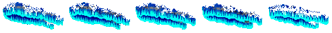
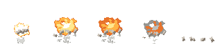

아트 루프 결과 — pilot1
스펙 docs/specs/art-loop.md · 승인: 2026-10-21 사용자 — 시범 e04·e30·k37·k09, 묶음 유료 상한 8회 · 유료 0/8회 · 비평 13회 · 합격선 A(전 항목 3+ · 평균 3.5+) · ★ = 결과로 고른 판
게임 모습은 게임 로더를 그대로 거친 그림이다(직업색 시트는 대표색으로 칠함). 게임 적용은 사용자 확인 뒤에 한다 — 일감마다 "적용 / 원래대로 + 이유"를 알려 주면 된다.
e04 E04 마력 폭발: 마름모 노바 — 마력이 모였다가 마름모꼴로 터져 퍼지는 폭발, 한 번 재생(0.6초). 직업색 시트(마법사 램프, 대표색 #4da6ff 로 칠함). 쓰는 곳: manaBurst.js
고친 이유: 비평 fix — 프레임 순서가 뒤섞이고 5번에서 툭 꺼짐 (움직임 2) · 유료 0/0 · 비평 2회 · 수리 1 · 다시 뽑기 0
결과: 합격 → v1 (평균 3.57)
전 (v0, 게임 모습)
후 (v1, 게임 모습)
e30 E30 별빛 화살비 ★★★: 하늘에 깔리는 밤하늘 조각 + 오로라 커튼, 프레임이 돌며 일렁이는 루프. 원래 색 시트. 쓰는 곳: skills.js
고친 이유: 비평 fix — 색 888개, 위쪽 회색 얼룩이 탁함, 끝 프레임이 튐 · 유료 0/0 · 비평 5회 · 수리 3 · 다시 뽑기 2
결과: 두 판 연속 점수가 오르지 않음 → v2 (평균 3.29)
전 (v0, 게임 모습)

후 (v2, 게임 모습)
| 판 | 만든 방법 | 의도 | 읽힘 | 깔끔 | 명암 | 도트 | 움직임 | 규칙 | 평균 | 판정 | 비평 요약 |
|---|---|---|---|---|---|---|---|---|---|---|---|
| v0 | 원래 그림 | 3 | 4 | 2 | 3 | 2 | 3 | 3 | 2.86 | fix | 오로라 커튼은 시안 드립으로 잘 읽히지만, 밤하늘 부분이 별 없는 회색 잡색 얼룩이라 지저분하다 — 색 줄이기·부스러기 정리·별 찍기·5번 프레임 정리로 고칠 것 시트 |
| v1 | 수리: recolor_gray, quantize, drop_crumbs | 3 | 3 | 3 | 3 | 2 | 3 | 4 | 3.0 | fix | 오로라 커튼 띠는 읽히나 색 442개 흐림 계조·윗 가장자리 부스러기로 도트감이 약하고 별이 없어 밤하늘 느낌이 부족 — 양자화·부스러기 정리·별 찍기로 수리 시트 |
| v2 ★ | 수리 v1: deink, drop_crumbs | 3 | 4 | 3 | 3 | 3 | 3 | 4 | 3.29 | fix | 오로라 커튼은 잘 읽히지만 밤하늘 부분이 별 없는 디더 노이즈이고 5프레임 크기가 튀어, 부스러기 정리·별 찍기·루프 맞춤 후처리 필요 시트 |
| v3 | 수리 v2: erode, drop_crumbs, frame_copy | 3 | 3 | 3 | 3 | 3 | 2 | 4 | 3.0 | fix | 오로라 띠 형태는 쓸 만하지만 프레임 간 변화가 거의 없어 일렁임이 안 보이고 별빛·하이라이트가 없어 밋밋함 — 별 찍기·줄무늬 물결 루프로 무료 수리. 시트 |
| v4 | 다시 뽑기 2: vfx_workbench (free, own recipe layers) + dev/vfx5/strip.py | 2 | 3 | 4 | 3 | 4 | 3 | 4 | 3.29 | regen | 깔끔한 도트지만 오로라 커튼이 바닥에 깔린 톱니 얼음 능선처럼 읽혀 '하늘의 오로라' 의도와 어긋나고 구도도 땅 원근이라 다시 뽑아야 한다. 시트 |
k37 대공성포(궁극기) 포격 마지막 타격 — 바닥 기준 대폭발: 주황·흰 폭발 + 밝은 회색 돌덩이 몇 개 + 먼지. 원래 색 시트. 쓰는 곳: siegeBarrage.js
고친 이유: 비평 + 사용자 동의 — 아래 파편이 잡부스러기이고 바닥에 안 붙음 · 유료 0/4 · 비평 4회 · 수리 3 · 다시 뽑기 0
결과: 두 판 연속 점수가 오르지 않음 → v2 (평균 3.43)
전 (v0, 게임 모습)

후 (v2, 게임 모습)

| 판 | 만든 방법 | 의도 | 읽힘 | 깔끔 | 명암 | 도트 | 움직임 | 규칙 | 평균 | 판정 | 비평 요약 |
|---|---|---|---|---|---|---|---|---|---|---|---|
| v0 | 원래 그림 | 3 | 4 | 3 | 3 | 3 | 3 | 4 | 3.29 | fix | 3프레임 절정은 기사 옆에서 대폭발로 잘 읽히지만, 1프레임이 떠 있는 원판이고 4프레임이 V자로 튀며 잔조각이 산만하고 마지막 먼지가 없다 — 무료 수리로 고친다 시트 |
| v1 | 수리 v0: anchor, frame_copy, recolor, recolor, recolor, drop_crumbs, recolor, recolor, recolor | 3 | 4 | 3 | 4 | 4 | 2 | 4 | 3.43 | fix | 밝고 도트도 깔끔하지만 공중에 뜬 시작·눈 같은 구멍·폭발에서 돌만 남는 끊긴 끝 때문에 움직임이 튀어, 프레임 수리(fix) 판정 시트 |
| v2 ★ | 수리 v1: frames_order, frame_copy, recolor, recolor, recolor, recolor, recolor, erode, drop_crumbs, anchor | 3 | 4 | 3 | 4 | 3 | 3 | 4 | 3.43 | fix | 주황·흰 폭발과 돌덩이는 의도대로 잘 읽히지만, 불덩이 가운데 구멍·아래 회색 기둥 탓에 바닥 폭발 느낌이 약하고 마지막 프레임이 끊겨 후처리 수리가 필요하다 시트 |
| v3 | 수리 v2: fill_holes, erode, drop_crumbs, anchor | 3 | 4 | 3 | 3 | 3 | 3 | 4 | 3.29 | fix | 크기·색은 대폭발로 충분히 읽히지만 화구 밑 회색 기둥이 다리처럼 보여 털뭉치 실루엣이 되고, 먼지 흩어짐 단계가 빠져 끝이 끊긴다 — 회색 기둥 정리·핵 밝히기·먼지 중간 프레임 추가로 수리. 시트 |
k09 횡참 명중: 대검을 수평으로 크게 그은 자리의 참격 충격(가로로 넓은 호·띠) + 쇳조각 몇 개. 직업색 시트(대표색 #4da6ff 로 칠함). 쓰는 곳: greatswordsman.js·tree7-fx (세로로 세워 쓰기도 함)
고친 이유: 비평 regen — 수평 참격이 아니라 기운 칼날 물체로 읽힘 (의도 2) · 유료 0/4 · 비평 2회 · 수리 0 · 다시 뽑기 1
결과: 합격 → v1 (평균 4.14)
전 (v0, 게임 모습)
후 (v1, 게임 모습)
| 판 | 만든 방법 | 의도 | 읽힘 | 깔끔 | 명암 | 도트 | 움직임 | 규칙 | 평균 | 판정 | 비평 요약 |
|---|---|---|---|---|---|---|---|---|---|---|---|
| v0 | 원래 그림 | 2 | 3 | 3 | 3 | 3 | 2 | 4 | 2.86 | regen | 명암·도트는 쓸 만하지만 횡참 호가 아니라 대각선 칼날 물체로 읽히고 끝까지 칼날이 남아 다시 뽑아야 한다. 시트 |
| v1 ★ | 다시 뽑기 1: vfx_workbench slash_trail (facing 100, flatten 0.35, sweep 1.1, thickness 1.6) 렌더 + 로컬 build.py | 4 | 4 | 4 | 4 | 4 | 4 | 5 | 4.14 | pass | 가로로 넓은 초승달 참격 띠가 얇게 나타나 굵어졌다 꼬리부터 흩어지는 흐름이 깔끔하고, 기사 옆에서도 잘 읽힘 — 통과(5번 프레임 디더·왼쪽 가장자리 닿음은 작은 흠). 시트 |